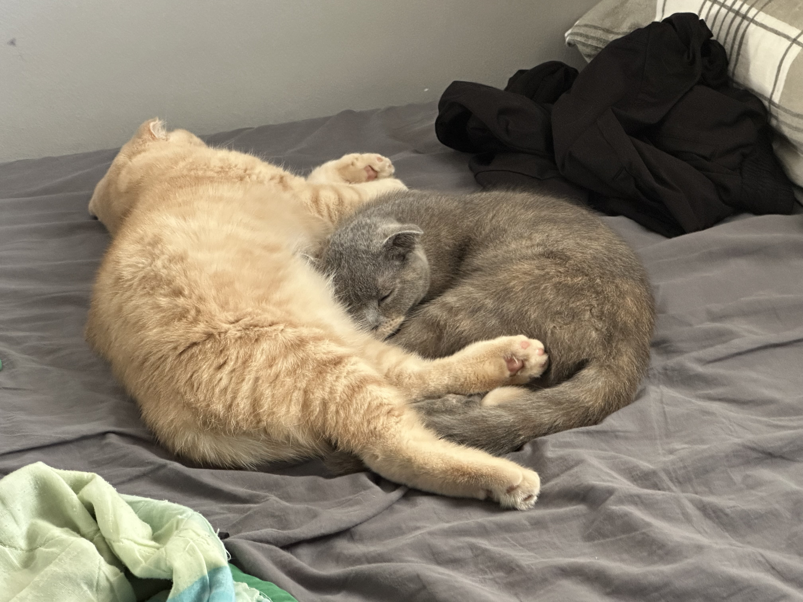

About Me
Hello dear viwer! My name is Guy, I'm 28 years old, living in Israel Ashdod and studying managment and database systems.
I love going to the gym because it makes me feel in control of my body, animals, nature and I have two cats called Max and Lucy :)
I love spending time outdoors because it helps me ground myself and keep me worry free.
my passions are trainging at the gym focusing on muscle hypetrophy, Rowing, airsoft, gamimg and learning new things.
click the photo :)
